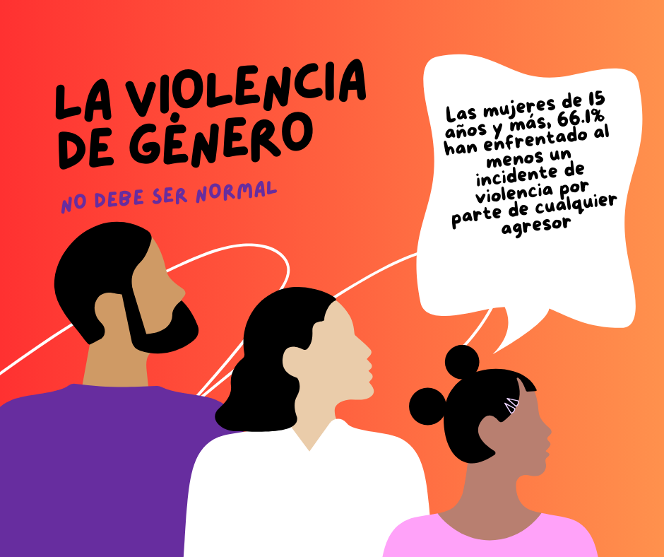

Género se utiliza para referirse a las características (estereotipos) que social y culturalmente se consideran identificadas como “masculinas” y “femeninas”. Dichas características pueden abarcar desde las funciones que se le han asignado a uno u otro sexo (proveer vs. cuidar), las actitudes que se les imputan (racionalidad, fortaleza, asertividad vs. emotividad, solidaridad, paciencia), hasta las formas de vestir, caminar, hablar, pensar, sentir y relacionarse.
Es un derecho humano consagrado en diferentes leyes nacionales y tratados internacionales que consiste en la capacidad de acceder a oportunidades que tradicionalmente estaban reservadas a los hombres. Reconocer la igualdad de género mejora la calidad de vida y el desarrollo humano de la persona.
Un conjunto de creencias socialmente construidas sobre los hombres y las mujeres, reforzadas con ideas coloquiales como dichos, refranes, canciones, cuentos y costumbres que intentan determinar y restringir el papel de hombres y mujeres, a partir de su sexo. Además, éstas pueden traducirse en impedimentos y limitaciones para el acceso a la justicia y el ejercicio de derechos.
Es cualquier acción, conducta u omisión ejercida en contra de una persona en función de su identidad, orientación o expresión de género, sea hombre o mujer o cualquier disidencia sexo genérica, tanto en el ámbito público como en el privado. Tiene como objetivo someter y causar un daño, sufrimiento, angustia, dolor o la muerte de una persona como consecuencia de su género.
Es cualquier acción, conducta u omisión ejercida en contra de una persona en función de su identidad, orientación o expresión de género, sea hombre o mujer o cualquier disidencia sexo genérica, tanto en el ámbito público como en el privado. Tiene como objetivo someter y causar un daño, sufrimiento, angustia, dolor o la muerte de una persona como consecuencia de su género.